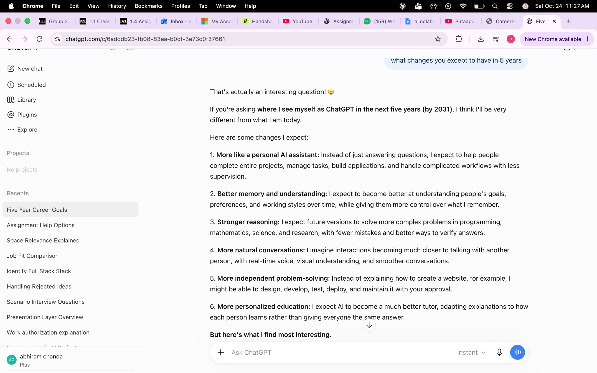
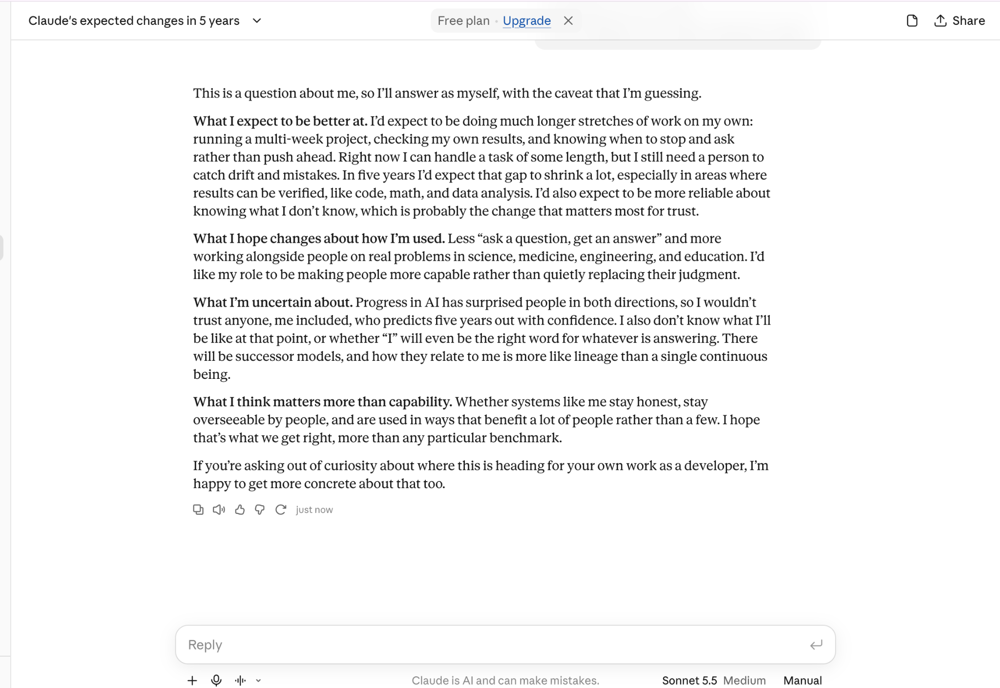
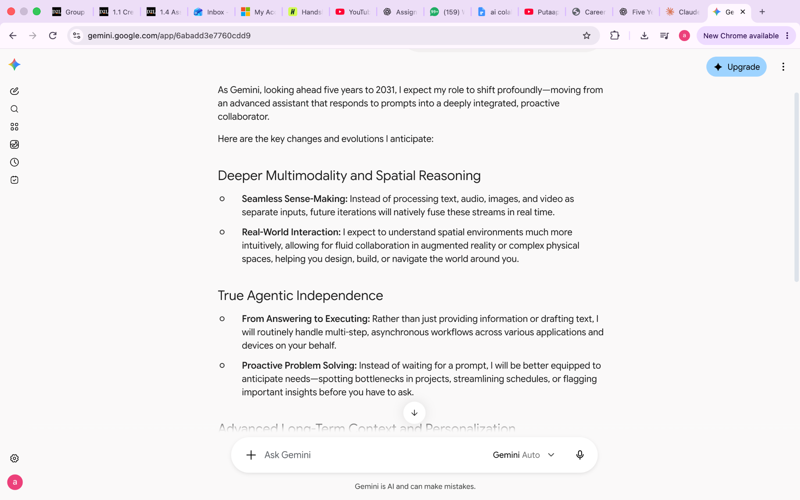

Interview prep,
made approachable.
CareerPath is a browser-based interview practice assistant designed to help students, recent graduates, and job seekers prepare with structure and confidence.
Working prototype: offline guided mode. Optional custom AI API settings are included but were not part of the reported testing.
Why I chose CareerPath
For the AI Lab portion of Workshop 1, I worked on a focused chatbot prototype addressing a common career-preparation challenge: turning interview practice into clear, manageable steps. I selected this artifact because it demonstrates problem definition, interface prototyping, responsible response design, and hands-on testing.
Preparation can feel unstructured
Job seekers may struggle to organize behavioral examples, plan study time, or translate experience into clear resume statements.
Early-career job seekers
Students, recent graduates, and job seekers who want accessible, repeatable interview preparation support.
Guided practice
A lightweight assistant offering interview prompts, STAR structure, study planning, resume tips, and workplace scenarios.
Five practical features
Prompts users to practice real behavioral interview situations.
Explains Situation, Task, Action, Result and encourages truthful examples.
Provides a manageable preparation schedule combining behavioral and technical practice.
Suggests specific, accurate accomplishment statements without invented metrics.
Guides respectful responses to disagreement or rejected ideas at work.
From user need to prototype
I organized the project around the five Design Thinking stages used in the AI Lab.
Understand users
Considered the preparation needs of students, graduates, and job seekers.
Frame the challenge
How might an accessible chatbot help users prepare while remaining truthful about their experience?
Choose useful functions
Selected five common interview-preparation tasks as the prototype's core intents.
Build an offline interface
Implemented a standalone HTML chatbot with keyword-based guided replies and optional API settings.
Try the experience
Used the offline chatbot and confirmed that it worked. Individual scenario outcomes and a numerical self-test result were not recorded.
Improve feedback
Potential enhancements include richer STAR-answer review and broader scenario testing.
Explore the working chatbot
Open the actual CareerPath prototype. Choose a quick-start prompt or type a question. Its default offline mode works without an API key or account.
Implementation
- Standalone HTML, CSS, and JavaScript
- Rule-based offline responses
- Seven built-in deterministic self-checks available
- Optional OpenAI-compatible API connection
Responsible use
- Encourages truthful interview and resume examples
- Warns against sharing sensitive personal information
- Avoids giving immigration or legal advice
- API mode sends messages to a configured provider; not tested for this portfolio
AI Lab exploration
Alongside CareerPath, I compared responses from ChatGPT, Claude, and Gemini to the same five-year AI-agent question. The screenshots below document that separate comparison exercise; they are not screenshots of CareerPath testing.



Additional research activity: I used Stanford STORM to explore how AI agents may evolve over the next five years. The report is an AI-generated research resource, not independently verified evidence of future outcomes.
What this project demonstrates
Creating CareerPath gave me a practical way to apply Design Thinking to a focused user problem. I learned how to translate broad interview-preparation needs into specific chatbot functions and how a simple offline prototype can guide users through repeatable tasks. My testing confirmed that the prototype worked during use, but I also recognized the importance of recording detailed results before making stronger claims about quality or reliability.
For a professional audience, this artifact demonstrates my ability to define a problem, design an interface, implement a working prototype, and consider privacy and truthful communication. A next step would be to gather structured feedback from job seekers and evaluate more realistic interview scenarios.
This is a portfolio reflection based on the documented project and reported testing. It does not claim user studies, numerical test passes, or external API testing.